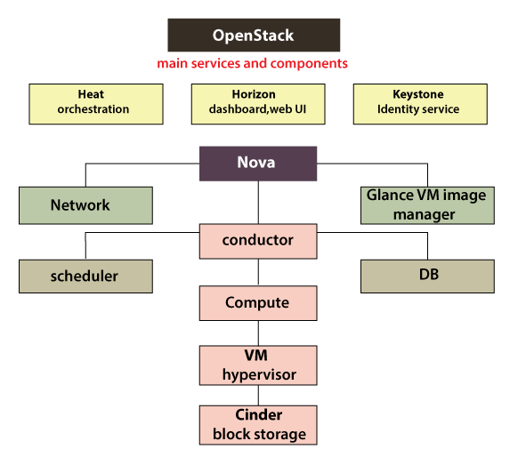

Unit IV: Cloud Platforms and Cloud Applications
Amazon Web Services (AWS): Amazon Web Services and Components
- Amazon Web Services, Inc. is a subsidiary of Amazon that provides on-demand cloud computing platforms and APIs to individuals, companies, and governments, on a metered pay-as-you-go basis. These cloud computing web services provide distributed computing processing capacity and software tools via AWS server farms.
AWS Services

- Amazon Web Services offer the following services for various computing
purposes:
- Hosting a web site
- Social networking
- Academic computing
- Sharing media
- Hosting applications
- Backup, storage, and disaster recovery
- Media distribution and content delivery
- Developing and testing environments
- Search engines
AWS Components
-
Data Management and Data Transfer: To run HPC applications in the AWS cloud, you need to move the required data into the cloud. There are several data transport solutions designed to securely transfer huge amounts of data. This overcomes issues like a long time for transfer, high network costs, and security concerns. Also, you can automate the movement of data between the AWS cloud and on-premises storage. There are options for establishing a private connection to the AWS from your premises. This increases bandwidth to provide more throughput, reduces the cost of the network, and provides a consistent network experience.
-
Compute & Networking: There are several compute instances types that can be customized according to your needs. It also handles monitoring your application and adjusting its capacity for maintaining a steady and predictable performance at an affordable cost. Also, setting up application scaling across multiple services for multiple resources takes a few minutes. Enhanced networking options from AWS allow achieving lower inter-instance latency and higher bandwidth.
-
Storage: When looking for an HPC solution, you need to consider the storage options and cost. There are several flexible blocks, object, and file storage options in AWS services that allow permanent and transient data storage. It allows allocating storage volumes according to the size you need. You can store and access and data type over the cloud without doing a data migration project. Also, with AWS services, you can transfer your workload to the cloud from on-premises.
-
Automation and Orchestration: For using the infrastructure efficiently, you need to automate scheduling submitted jobs and the job submission process. AWS services allow you to run thousands of batch computing jobs through the dynamic provision of the computer resources on the basis of the requirements.
-
Operations and Management: As a system administrator, you are responsible for avoiding cost overruns and monitoring the infrastructure. There are several management and monitoring services that allow you to optimize utilization of resources, monitor the application, get a complete view of operational health, and respond to the performance changes.
-
Visualization: With the AWS services, you can easily visualize the engineering simulations’ results without moving huge amounts of data. Now, you can access the interactive applications remotely over a standard network and deliver application sessions to any workstation.
-
Security and Compliance: For running applications on the cloud, you need to have an understanding of regulatory compliance and security management. There are several quick-launch templates and security related services offered by AWS that helps in protecting data and customer privacy by putting strong safeguards in the AWS infrastructure.
Amazon Simple DB
-
Amazon SimpleDB is a distributed database written in Erlang by Amazon.com. It is used as a web service in concert with Amazon Elastic Compute Cloud and Amazon S3 and is part of Amazon Web Services.
Elastic Cloud Computing (EC2)
-
Amazon Elastic Compute Cloud is a part of Amazon.com's cloud-computing platform, Amazon Web Services, that allows users to rent virtual computers on which to run their own computer applications.
-
EC2 refers to an on-demand computing service on the AWS cloud platform. Under computing, it includes all the services a computing device can offer to you along with the flexibility of a virtual environment. It also allows the user to configure their instances as per their requirements i.e. allocate the RAM, ROM, and storage according to the need of the current task. Even the user can dismantle the virtual device once its task is completed and it is no more required. For providing, all these scalable resources AWS charges some bill amount at the end of every month, bill amount is entirely dependent on your usage.
-
Features of Amazon EC2:
- Functionality: EC2 provides its users a true virtual computing platform, where they can various operations and even launch another EC2 instance from this virtually created environment. This will increase the security of these virtual devices. Not only creating but also EC2 allows us to customize our environment as per our requirements, at any point of time during the life span of this virtual machine. Amazon EC2 itself comes with a set of default AMI(Amazon Machine Image) options supporting various operating systems along with some pre-configured resources like RAM, ROM, storage, etc. Besides these AMI options, we can also create an AMI curated with the combination of default and user-defined configurations. And for future purposes, we can store this user-defined AMI, so that next time, the user won’t have to re-configure a new AMI from scratch. Rather than this whole process, the user can simply use the older reference while creating a new EC2 machine.
- Operating Systems: Amazon EC2 includes a wide range of operating
systems to choose from while selecting your AMI. Not only these selected
options, but users are also even given the privileges to upload their
own operating systems and opt for that while selecting AMI during
launching an EC2 instance. Currently, AWS has the following most
preferred set of operating systems available on the EC2 console.
- Amazon Linux
- Windows Server
- Ubuntu Server
- SUSE Linux
- Red Hat Linux
-
Software: Amazon is single-handedly ruling the cloud computing market, because of the variety of options available on it for its users. It allows its users to choose from various software present to run on their EC2 machines. This whole service is allocated to AWS Marketplace on the AWS platform. Numerous software like SAP, LAMP and Drupal, etc are available on AWS to use.
-
Scalability and Reliability: EC2 provides us the facility to scale up or scale down as per the needs. All dynamic scenarios can easily be tackled by EC2 with the help of this feature. And because of the flexibility of volumes and snapshots, it is highly reliable for its users. Due to the scalable nature of the machine, many organizations like Flipkart, Amazon rely on days whenever humongous traffic occurs on their portals.
Amazon Storage System
-
Amazon Simple Storage Service (Amazon S3) is an object storage service that offers industry-leading scalability, data availability, security, and performance.
Amazon Database services (Dynamo DB).
-
Amazon DynamoDB is a fully managed proprietary NoSQL database service that supports key–value and document data structures and is offered by Amazon.com as part of the Amazon Web Services portfolio. DynamoDB exposes a similar data model to and derives its name from Dynamo, but has a different underlying implementation.
Microsoft Cloud Services
- Microsoft Azure, often referred to as Azure, is a cloud computing service operated by Microsoft for application management via Microsoft-managed data centers.
Azure core concepts
| Concept Name | Description |
|---|---|
| Regions | Azure is a global cloud platform which is available across various regions around the world. When you request a service, application, or VM in Azure, you are first asked to specify a region. The selected region represents datacenter where your application runs. |
| Datacenter | In Azure, you can deploy your applications into a variety of data centers around the globe. So, it is advisable to select a region which is closer to most of your customers. It helps you to reduce latency in network requests. |
| Azure portal | The Azure portal is a web-based application which can be used to create, manage and remove Azure resource and services. It is located at https://portal.azure.com. |
| Resources | Azure resource is an individual computer, networking data or app hosting services which charged individually. Some common resources are virtual machines( VM), storage account, or SQL databases. |
| Resource groups | An Azure resource group is a container which holds related resource for an Azure solution. It may include every resource or just resource which you wants to manage. |
| Resource Manager templates | It is a JSON which defines one or more resource to deploy to a resource group. It also establishes dependencies between deployed resources. |
| Automation: | Azure allows you to automate the process of creating, managing and deleting resource by using PowerShell or the Azure command-line Interface(CLI). |
| Azure PowerShell | PowerShell is a set of modules that offer cmdlets to manage Azure. In most cases, you are allowed to use, the cmdlets command for the same tasks which you are performing in the Azure portal. |
| Azure command-line interface(CLI) | The Azure CLI is a tool that you can use to create, manage, and remove Azure resources from the command line. |
| REST APIs | Azure is built on a set of REST APIs help you perform the same operation that you do in Azure portal Ul. It allows your Azure resources and apps to be manipulated via any third party software application. |
SQL Azure
-
Microsoft Azure SQL Database is a managed cloud database provided as part of Microsoft Azure. A cloud database is a database that runs on a cloud computing platform, and access to it is provided as a service. Managed database services take care of scalability, backup, and high availability of the database.
Windows Azure Platform Appliance.
-
The Windows Azure Platform Appliance consists of Windows Azure, SQL Azure and a Microsoft-specified configuration of network, storage and server hardware. Service providers, governments and large enterprises who would, for example, invest in a 1000 servers at a time, will be able to deploy the Windows Azure platform on their own hardware in their datacenter. Microsoft Windows Azure Platform Appliance is optimized for scale out applications - such as eBay- and datacenter efficiency across hundreds to thousands to tens-of-thousands servers.
Cloud Computing Applications:
-
Cloud service providers provide various applications in the field of art, business, data storage and backup services, education, entertainment, management, social networking, etc.
Healthcare
- Cloud computing in healthcare describes the practice of implementing remote servers accessed via the internet to store, manage and process healthcare-related data. This is in contrast to establishing an on-site data center with servers, or hosting the data on a personal computer.
-
Collaboration: Sharing facilitates collaboration. As healthcare information is meant to stay confidential, with the cloud, the data can be securely shared among all the relevant healthcare stakeholders like doctors, nurses, and care-givers that, too, in real-time.
-
Security: Healthcare data needs to stay confidential. The abundant data held by this domain makes it a focal point of attraction to the malicious actors, resulting in security and data breaches.
-
Cost: Cloud can hold an enormous amount of information at a very minimal cost. Cloud computing works on the pay-as-you-go and subscription model, which indicates you only have to pay for those services which you are availing.
-
Speed: Cloud-based tools can update and upgrade their features at a commendable pace with minimal intervention, and you can get real-time updates as well on all the relevant information.
-
Scalability and Flexibility: Cloud facilitates technologies that are used in healthcare like electronic medical records, mobile apps, patient portals, devices with IoT, big data analytics.
ECG(Electrocardiogram) Analysis in the Cloud
-
ECG analysis in cloud computing: cloud computing technologies allows the remote monitoring of a patient's heart beat data. Through this way the patient at risk can be constantly monitored without going to the hospital for ECG analysis. At the same time the Doctor's can instantly be notified with cases that need's their attention.
-
An ECG is just a visual image of a record of the electrical activity of the heart muscle as it varies over time, typically printed on paper for easier study. Similarly, like other muscles, the heart contracts in response to electrical depolarization caused in the muscle cells. When it's the time of day, it's the amount of the electrical activity, when amplified and registered for just a few seconds that we call a heart rhythm.
-
With ECG data collection and tracking, it's possible to test for chest pain, low-grade heart rhythm disturbances, arrhythmias, and more. An E-G (electrocardiogram) is the electrical expression of the contractile movement of the myocardium.
-
Advantages:
-
Since cloud computing systems are now readily available and deliver the services in less time, it's got the promise to be a massive disruptor to how the technology is distributed.
-
As a consequence, the doctor doesn't need to put a huge effort into computing, since there is a lot of software on which to run.
-
Cloud infrastructure is highly scalable; it can be maximized and minimized according to the needs of each user.
-
Cloud computing (or cloud computing) systems are now available and aim to provide reliable services to consumers with less time.
-
The doctor's office would not need to invest in a broad computer system.
-
Biology
- Cloud computing is an emerging technology that provides various computing services on demand. It provides convenient access to a shared pool of higher-level services and other system resources. Nowadays, cloud computing has a great significance in the fields of geology, biology, and other scientific research areas.
Protein Structure Prediction
-
Protein structure prediction is the best example in research area that makes use of cloud applications for its computation and storage.
-
A protein is composed of long chains of amino acids joined together by peptide bonds. The various structures of protein help in the designing of new drugs and the various sequences of proteins from its three-dimensional structure in predictive form is known as a Protein structure prediction.
-
Firstly primary structures of proteins are formed and then prediction of the secondary, tertiary and quaternary structures are done from the primary one. In this way predictions of protein structures are done. Protein structure prediction also makes use of various other technologies like artificial neural networks, artificial intelligence, machine learning and probabilistic techniques, also holds great importance in fields like theoretical chemistry and bioinformatics.
-
There are various algorithms and tools that exists for protein structure prediction. CASP (Critical Assessment of Protein Structure Prediction) is a well-known tool that provides methods for automated web servers and the results of research work are placed on clouds like CAMEO (Continuous Automated Model Evaluation) server. These servers can be accessed by anyone as per their requirements from any place. Some of the tools or servers used in protein structure prediction are Phobius, FoldX, LOMETS, Prime, Predict protein, SignalP, BBSP, EVfold, Biskit, HHpred, Phre, ESyired3D. Using these tools new structures are predicted and the results are placed on the cloud-based servers.
Geosciences
- Earth science or geoscience includes all fields of natural science related to the planet Earth.
Satellite Image Processing,
-
Satellite Image Processing is an important field in research and development and consists of the images of earth and satellites taken by the means of artificial satellites. Firstly, the photographs are taken in digital form and later are processed by the computers to extract the information. Statistical methods are applied to the digital images and after processing the various discrete surfaces are identified by analyzing the pixel values.
-
Majorly there are four kinds of resolutions associated with satellite imagery. These are:
- Spatial resolution: It is determined by the sensors Instantaneous Field of View(IFoV) and is defined as the pixel size of an image that is visible to the human eye being measured on the ground. Since it has high resolving power or the ability to separate and hence is termed as Spatial Resolution.
- Spectral resolution: This resolution measures the wavelength internal size and determines the number of wavelength intervals that the sensor measures.
- Temporal resolution: The word temporal is associated with time or days and is defined as the time that passes between various imagery cloud periods.
- Radiometric resolution: This resolution provides the actual characteristics of the image and is generally expressed in bits size. It gives the effective bit depth and records the various levels of brightness of imaging system.
Business and Consumer Applications
CRM and ERP
-
CRM (Customer Relationship Management) and ERP (Enterprise Resource Planning) software are powerful tools for a business or enterprise to use. CRM handles the sales, marketing, and customer service information.
Social Networking
-
Social networks help boost internet usability by storing heavy multimedia content in cloud storage systems. Videos and photographs are the most popular content on social media, which essentially use up the maximum space allocated to them. They have the capacity to slow down applications and servers with all of their resource demands. Cloud computing vendors such as Salesforce and Amazon nowadays provide varied services including Customer Relationship Management (CRM) and Enterprise Resource Planning (ERP). As they deliver these things through cloud servers, clients can use the flexibility and scalability of the system without purchasing standalone software or hardware.
-
Apart from data storage, the social networks are now also using clouds for various other tasks. For example, this can be ideal for big data analytics. One of the benefits of using cloud systems is that users can access vast amount of structured and even non-structured data easily. Just take a look at the much-improved analytics provided by sites like Facebook, especially for its business users.
-
Another way cloud computing becomes helpful is by reducing the cost of data backup and recovery in case of a disaster. If the data is only stored in one central location, it becomes much riskier. If something happens there, it is almost impossible to recover the data. But through cloud they remain accessible through shared resources across the globe. This is especially useful for social networks as the store personal data of its users, and so cannot afford to lose even one part of it.
Google Cloud Application
- Google Cloud Platform, offered by Google, is a suite of cloud computing services that runs on the same infrastructure that Google uses internally for its end-user products, such as Google Search, Gmail, Google Drive, and YouTube.
Google App Engine.
-
Google App Engine is a cloud computing platform as a service for developing and hosting web applications in Google-managed data centers. Applications are sandboxed and run across multiple servers.
Overview of OpenStack architecture.
-
OpenStack is a free, open standard cloud computing platform. It is mostly deployed as infrastructure-as-a-service in both public and private clouds where virtual servers and other resources are made available to users.
-
OpenStack contains a modular architecture along with several code names for the components.
